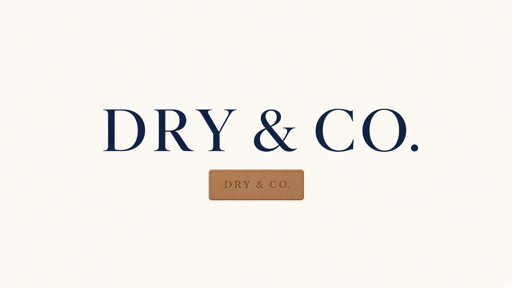
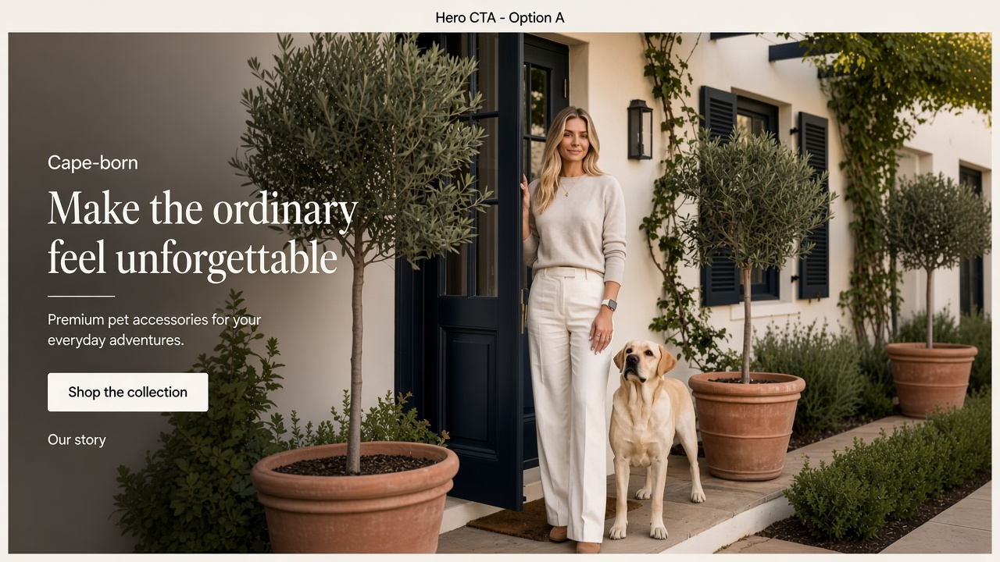

Design options, live on the site
Logo, favicon, quieter hero CTAs, and a compressed hero image. Pick what stays.
1. Logo wordmark
Serif lockup from the end-card / leather-patch world. SVG for crisp nav; PNG mock for presentation.

2. Favicon
D&C monogram on navy with leather underline — shows in browser tabs.

`assets/images/favicon.svg` linked from the homepage.
3. Hero CTAs — fewer, clearer
One primary shop action. One quiet story link. Stats moved out of the first viewport.

Two loud shop buttons + stats
Shop the collection · Shop bestselling sets · rating / shipping / free-ship strip under the fold of the hero.
Shop + Our story
Primary button to shop. Ghost link to Milo’s story. Trust strip still sits just below the hero.
4. Hero as WebP
Same woman as “Why it sells”, compressed for mobile speed without the soft AI-upscale mush.
5. Dry Ritual clip frames
Story / Status sequence — wrap → robe → leather patch → rest → end card. Full clip on the Dry Ritual page.